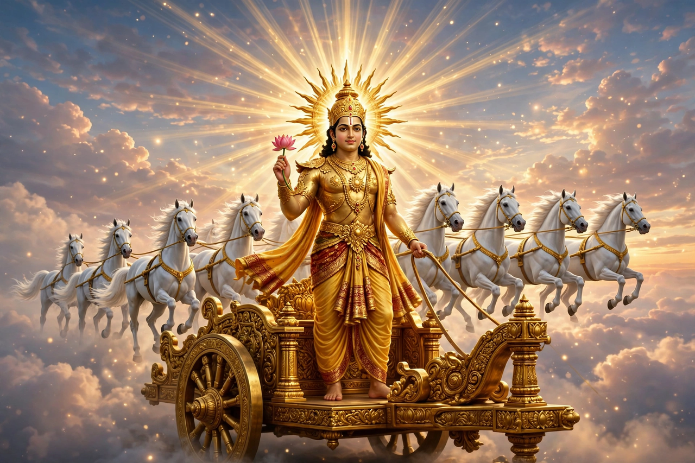

From Wikipedia, the free encyclopedia
| Surya | |
|---|---|
| Affiliation | Hinduism; god of the sun |
| Depicted as | Riding a chariot drawn by seven horses, driven by Aruna, the dawn |
| Consorts | Sanjna; Chhaya (her shadow-substitute) |
| Children | Yama, Manu, the Ashvins (by Sanjna, in various tellings) |
| Festivals | Chhath; Pongal/Makar Sankranti; Ratha Saptami |

Surya is the Hindu god of the sun, one of the oldest deities of the Vedic tradition — the visible eye of the gods, the measurer of days, the destroyer of darkness and disease — and in later Hinduism one of the five deities of the Smarta tradition's panchayatana worship, with his own once-great sect (the Saura) and monumental temples, of which the 13th-century Konark Sun Temple in Odisha, built as his colossal chariot with carved wheels and horses, is a World Heritage Site. The Gayatri mantra, Hinduism's most sacred verse, is addressed to Surya in his aspect as Savitr, the sun's life-giving power.
Surya's brightness is his problem in the domestic myths: his wife Sanjna, unable to bear his heat and glare, left her shadow Chhaya in her place and fled in the form of a mare; Surya, finding her as a stallion, fathered the divine twins the Ashvins, and agreed to have his radiance trimmed by the divine craftsman Vishvakarma — the shaved-off splendour becoming Vishnu's discus, Shiva's trident and other weapons of the gods. His sons define cosmic offices: Yama, first mortal and king of the dead; Manu, progenitor of mankind; Shani, the feared planet Saturn. His charioteer is Aruna, the legless dawn, brother of Garuda.
Surya is worshipped daily by millions in the dawn salutation — the Surya Namaskar of yoga is his liturgy turned exercise — and at festivals: Chhath in Bihar and Nepal, where devotees fast and offer to the setting and rising sun standing in rivers; Pongal in Tamil Nadu, boiling the new rice for him; and Ratha Saptami, his birthday. Because he is the one god everyone can see, his theology is philosophy-ready: the sun as the visible form of the invisible absolute, an identification the Upanishads already make.
Hinduism · Indra · Agni · Vishnu · Amaterasu (fellow sun deity)